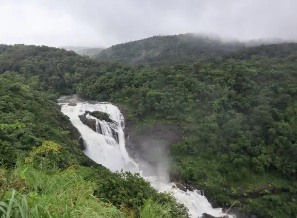
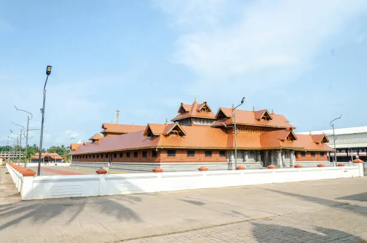
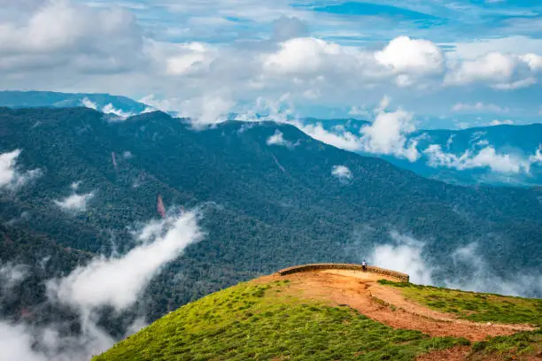

Bengaluru
The bustling capital of Karnataka, known for its gardens, nightlife, and tech hubs.
Hampi
A UNESCO World Heritage site, Hampi is famous for its ancient ruins and temples.

Coorg
Known as the Scotland of India, Coorg offers lush greenery, coffee plantations, and waterfalls.
Udupi
Famous for its temples, beaches, and delicious South Indian cuisine.
Chikmagalur
A haven for coffee lovers, with picturesque trekking routes and serene landscapes.
